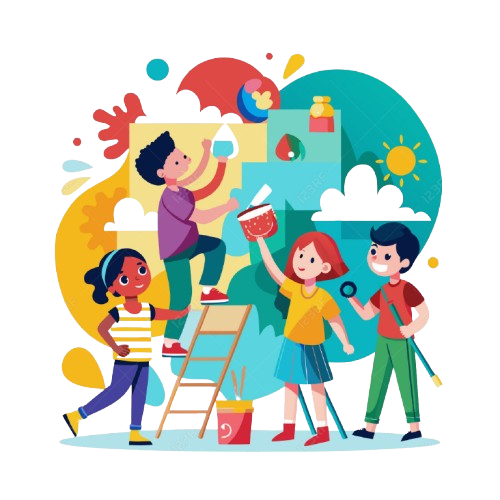
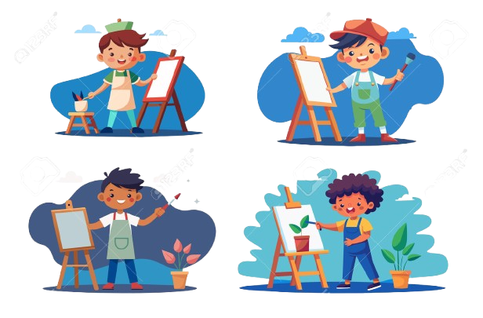
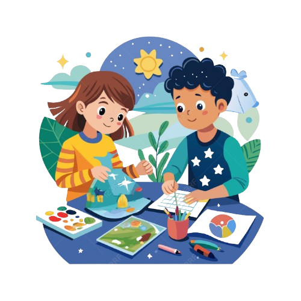
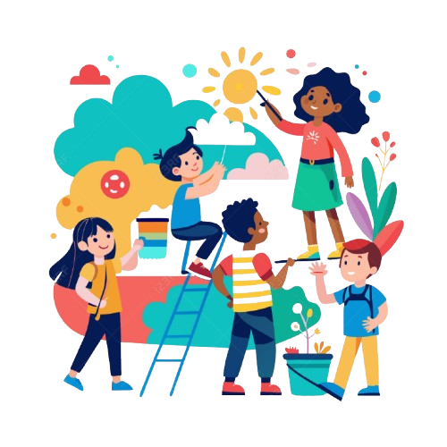
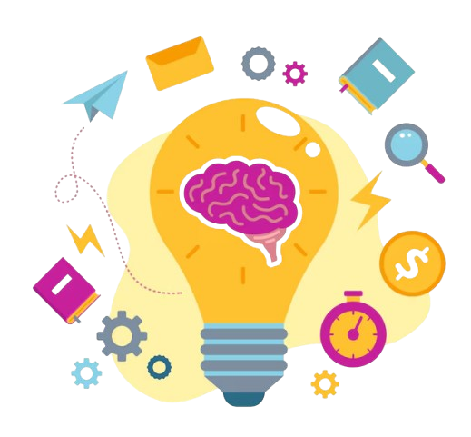

El proyecto Aprendo y Recreo busca hacer que las matemáticas sean divertidas y accesibles para los niños de sexto grado a través de talleres de diseño gráfico, fomentando la curiosidad y el pensamiento crítico.

Este nuevo modelo educativo promueve la integración de ideas creativas con habilidades prácticas, cerrando las brechas entre las artes, la arquitectura y los oficios.

Las tendencias actuales en diseño educativo están transformando la forma en que los estudiantes aprenden, creando espacios que estimulan tanto la salud mental como la creatividad.

LCI Melbourne implementa el enfoque pedagógico "Different by Design", cultivando curiosidad y coraje entre los estudiantes para empoderarlos en su aprendizaje.
Con el aumento de la digitalización, el diseño gráfico sigue siendo un campo en constante demanda, esencial para crear contenido visual atractivo en un mercado competitivo.

Las técnicas de brainstorming se están consolidando como una metodología clave en el proceso creativo educativo. Estas técnicas permiten a los estudiantes generar ideas frescas e innovadoras, integrando el pensamiento visual en sus proyectos. Instituciones como el IED están liderando esta iniciativa, ofreciendo cursos que potencian las habilidades creativas necesarias para el futuro